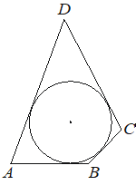

Opus100
Предварительные разборы, внешнего эталона нет.
| В четырёхугольник вписана окружность, |  |
{
"complete": true,
"included": true,
"exclusion_reasons": [],
"author_mode": "standalone_initial",
"author_path": "data\\annotation\\runs\\2026-11-07-fipi-team-bogdan108-051-150\\raw\\author\\4e31DD.json",
"auditor_path": "data\\annotation\\runs\\2026-11-07-fipi-team-bogdan108-051-150\\raw\\auditor\\4e31DD.json",
"feedback_ref": null,
"source_run": "data/annotation/runs/2026-11-07-fipi-team-bogdan108-051-150"
}{
"task_id": "4e31DD",
"solution_status": "solved",
"answer": "11",
"steps": [
{
"id": "s1",
"action": "Применить свойство описанного четырёхугольника: суммы противоположных сторон равны, AB+CD=BC+AD",
"result": "6+9=4+AD",
"kc_ids": [
"kc1"
],
"input_refs": [
"condition"
]
},
{
"id": "s2",
"action": "Решить линейное уравнение относительно AD",
"result": "AD=11",
"kc_ids": [
"kc2"
],
"input_refs": [
"s1"
]
}
],
"kc_candidates": [
{
"id": "kc1",
"name": "Составить равенство сумм противоположных сторон описанного четырёхугольника",
"description": "Вход: четырёхугольник, в который вписана окружность, и известные длины сторон. Операция: записать равенство сумм пар противоположных сторон. Граница: только для четырёхугольника с вписанной окружностью."
},
{
"id": "kc2",
"name": "Решить линейное уравнение с одной неизвестной",
"description": "Вход: линейное уравнение с числовыми коэффициентами. Операция: выразить неизвестную. Граница: уравнение уже линейное."
}
],
"methods": [
{
"id": "m1",
"name": "Нахождение стороны описанного четырёхугольника через равенство сумм противоположных сторон",
"step_ids": [
"s1",
"s2"
]
}
],
"warnings": []
}{
"task_id": "4e31DD",
"catalog_version": "fipi50-editorial-v1-frozen",
"decisions": [
{
"local_kc_id": "kc1",
"status": "new_candidate",
"catalog_kc_id": null,
"evidence": [
{
"ref": "step:s1:action",
"quote": "Применить свойство описанного четырёхугольника: суммы противоположных сторон равны, AB+CD=BC+AD"
},
{
"ref": "step:s1:result",
"quote": "6+9=4+AD"
},
{
"ref": "image:assets/e5ac50bd9e7d5ef16306b5ee.png",
"region_description": "Четырёхугольник ABCD (A, B снизу, C справа, D сверху) с окружностью, касающейся всех четырёх сторон"
}
],
"context_refs": [
"condition"
],
"alternatives_checked": [
{
"catalog_kc_id": "physical_formula_substitution",
"reason": "Подстановка в заданную формулу; здесь применяется геометрическое свойство, а не данная в условии формула"
},
{
"catalog_kc_id": "literal_fe8297102f74",
"reason": "Другое геометрическое свойство (серединный перпендикуляр)"
}
],
"rationale": "Операция: по факту вписанной окружности записать равенство сумм противоположных сторон с подстановкой известных длин. В каталоге нет узла о свойствах описанного четырёхугольника или равенстве касательных отрезков.",
"proposal": {
"name": "Использовать равенство сумм противоположных сторон описанного четырёхугольника",
"definition": "Для выпуклого четырёхугольника с вписанной окружностью записать AB+CD=BC+AD с правильным выбором пар противоположных сторон; решение полученного уравнения отдельно."
},
"blocking": false,
"issue_ids": []
},
{
"local_kc_id": "kc2",
"status": "match",
"catalog_kc_id": "linear_equation",
"evidence": [
{
"ref": "step:s2:action",
"quote": "Решить линейное уравнение относительно AD"
},
{
"ref": "step:s2:result",
"quote": "AD=11"
}
],
"context_refs": [
"step:s1:result"
],
"alternatives_checked": [
{
"catalog_kc_id": "literal_0cf8af170957",
"reason": "Неравенство, а не уравнение"
}
],
"rationale": "Аффинное уравнение 6+9=4+AD с числовыми коэффициентами решено: AD=11; построение модели выполнено в s1 и не входит.",
"proposal": null,
"blocking": false,
"issue_ids": []
}
],
"issues": [],
"review_scope": "KC mapping with incidental mathematical checks; not expert validation"
}[]
{
"included": true,
"exclusion_reasons": [],
"source_policy_included": true,
"source_policy_exclusion_reasons": []
}